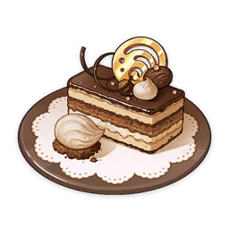
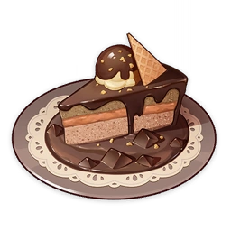
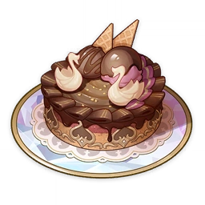
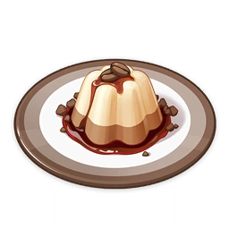
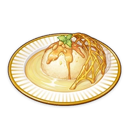
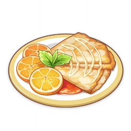

Pick What You Like! (Specialty)
Navia's specialty. "Come on, pick the one you like!" Along with the familiar cries of joy, you see before your eyes the aesthetically pleasing double-layered dessert stand and the neat rows of macarons with different expressions painted onto them. One thought suddenly fascinates you... What expression would Navia make if you were to give in to greed and steal all of them for yourself?

Rainbow Macarons
Small, multi-colored round pastries. There's a saying in Fontaine that a dessert spread without macarons is like having the many waters bereft of their source. Never mind the dessert artists in Fontainian kitchens — even dessert dilettantes on the streets know this adage by heart..
La Lettre a Focalors
A small cake, shaped into a long rectangle. It is said that long, long ago, a certain patissier used the great love the people of Fontaine held for their Hydro Archon as inspiration to create this confectionary masterpiece. The manifold layers stacked one upon the other are a true test of the chef's skills, and each aspect of this cake is proof of the great Hydro Archon's influence.
Petite Gateau Debord Revised Version
A petite version of the famous Gateau Debord. Even when compared to its namesake, of which only sixteen slices are sold each day, the extraordinary adventures you've experienced together are yet more precious and worthy of remembrance still. Perhaps when Escoffier scribbled down this recipe, she was thinking along these same lines.
Gateau Debord Magnifique
Escoffier's specialty. Its lavish appearance is even more dazzling than any gateau you've seen before. It has an aura that captivates at first glance and a taste that is impossible not to love, like a soft, warm blanket that envelops every tastebud and suffuses your body with joy... Without a doubt, Escoffier's culinary talents have quietly reached new heights.
Coffee Bavarois
A refreshing dessert. Though it is one of Fontaine's trademark desserts, its recipe is very simple and straightforward. As long as the proportion of ingredients is right, hardly anyone could fail at making this dessert. It has an exquisite texture with a touch of refreshing cold taste, and can instantly lift your spirits.
Ile Flottante
A dessert made of egg whites. The cooking process is simple: Froth up the egg whites properly, and half the battle is won. Place the heated egg whites on the sauce, and you're done. The dessert has an exquisite look and is the first choice of Fontainian ladies for afternoon tea.
Crepes Suzette
Crepes with fillings. Fry the crepes first, then serve them with jam, cream, and fruit slices. In fact, the recipe has quite a few variants. The dish's taste differs according to the different ingredients used.